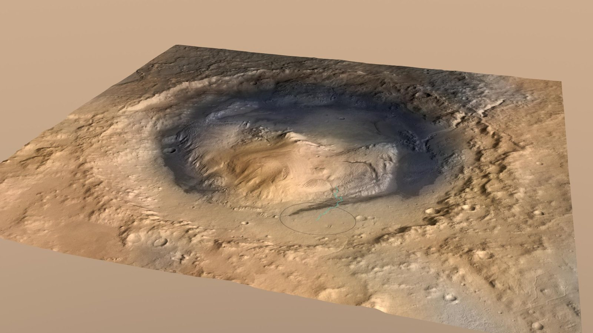
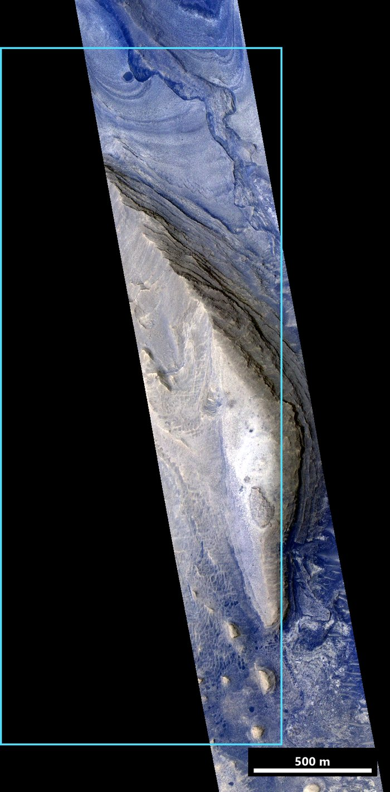
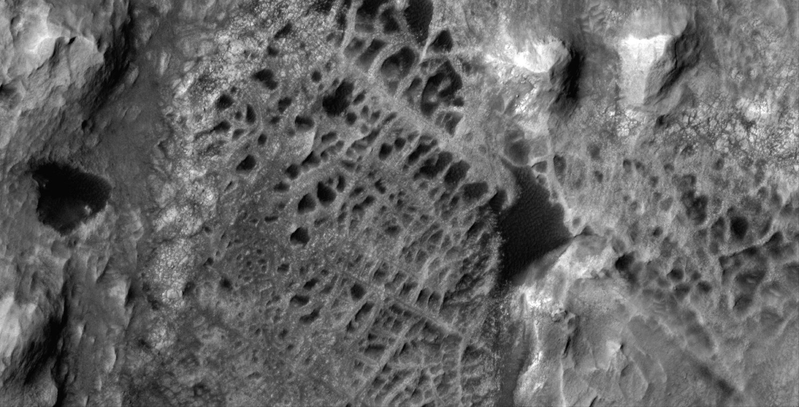
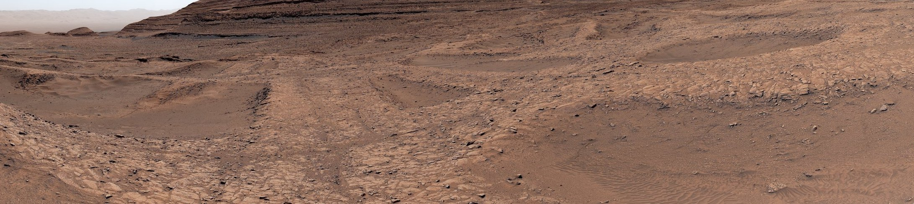
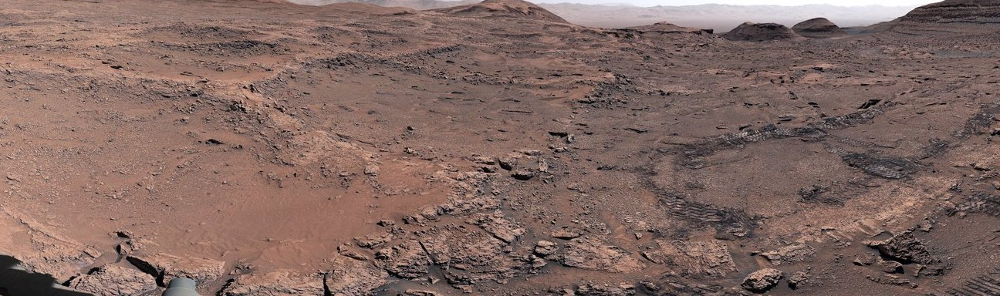
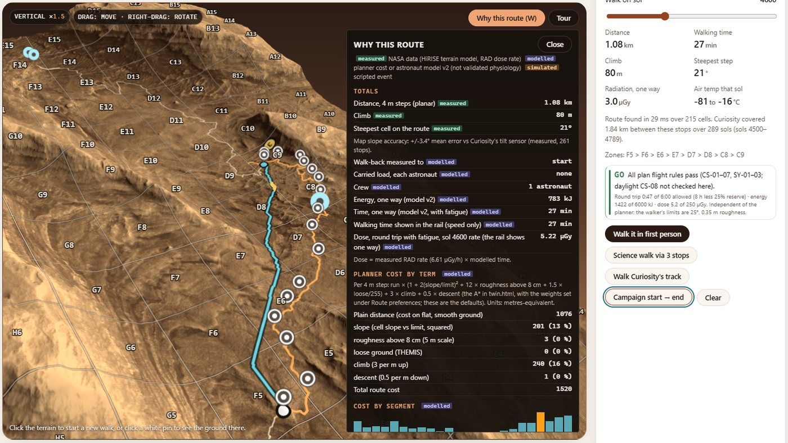
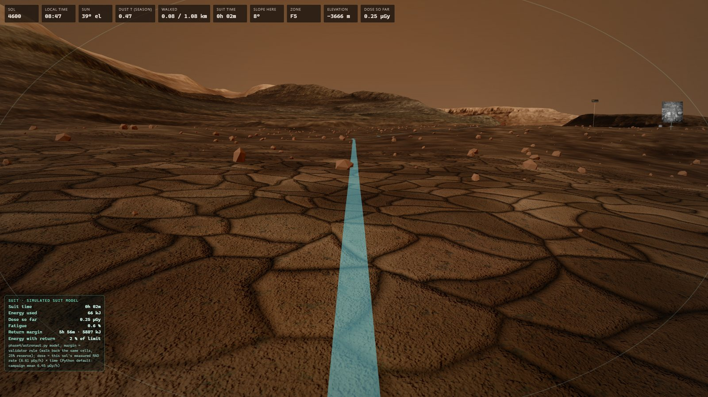

NASA Space Apps Challenge 2026 · Interplanetary Survival Guide: Martian Map
Have you ever seen Mars up close?
Gale crater · 4.8° S, 137.4° E
Here is where we are going.
A 154 km crater with a 5 km mountain in the middle, Mount Sharp. NASA's Curiosity rover has been driving up it since August 2012. In 2025 it reached the boxwork: a maze of ridges left by groundwater.
Globe: Viking MDIM 2.1 colour mosaic (NASA/JPL-Caltech/USGS, via JPL Mars Trek) with MOLA relief (NASA/GSFC/MOLA Science Team, USGS). Stars: NASA/GSFC Scientific Visualization Studio, Deep Star Maps 2020.

From orbit
A camera that sees things the size of a table.
NASA's Mars Reconnaissance Orbiter photographs this ground with HiRISE at 25 cm per pixel and measures its height in 3D at 1 m. From up there the boxwork looks like a spider web: ridges where groundwater once hardened the rock.
Left: HiRISE ESP_094058_1750, enhanced colour, our study area outlined. Right: HiRISE view of the boxwork, PIA26306. NASA/JPL-Caltech/University of Arizona


From the ground
And from Curiosity, standing on it.
In 2025 the rover drove into the boxwork and photographed it in colour with its Mastcam. Inside REDWALK you also see its Navcam photos and 3D scans, placed where each one was taken.
Top: boxwork survey, Sept 2025, PIA26693. Bottom: first 360° view of the boxwork, May 2025, PIA26559. Curiosity Mastcam, NASA/JPL-Caltech/MSSS


The data
Seven kinds of NASA data on one map.
The question
Where can an astronaut walk safely?
REDWALK plans the route, checks every 4 m of it against flight rules (slope, boulders, radiation, time, energy), and then lets you walk it in first person. When new data arrives, the route changes with it.


30 seconds